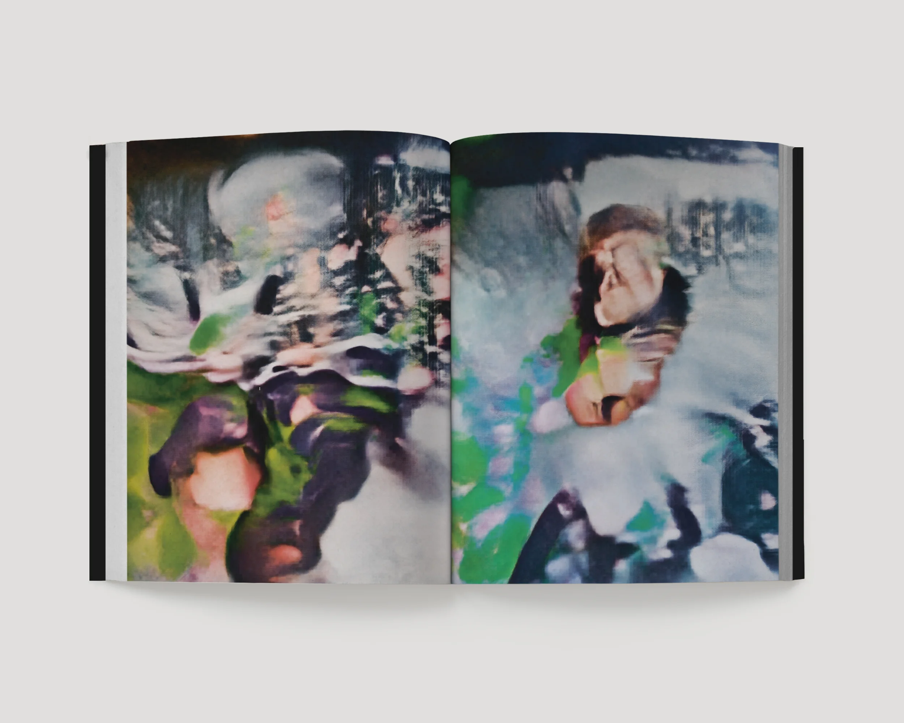

Handshake protocol (pending)
2026 / writing
At the invitation of François Bellabas, I wrote a text in response to his work Embedded presence. The text addresses several questions raised by the work: the tension between physical and virtual reality, the terminal–network dialectic, interaction with the image and, finally, the screen as a critical object/threshold in which all these stakes converge.
This contribution was published in the volume Réinventer la photographie, which documents the commission of the same name, led by the Cnap.
Sur invitation de François Bellabas, j’ai rédigé un texte en écho à son œuvre Embedded presence. Le texte évoque plusieurs interrogations que l’œuvre met en jeu, comme la tension entre réalité physique et virtuelle, la dialectique terminal-réseau, l’interaction avec l’image et, enfin, l’écran comme objet/seuil critique concentrant tous ces enjeux.
Cette contribution a été publiée au sein de l’ouvrage Réinventer la photographie, rendant compte de la commande éponyme, portée par le Cnap.
Planet Earth, Solar System
https://www.francoisbellabas.com/embedded-presence.html
https://www.poursuite-editions.org/produit/reinventer-la-photographie/

-extrait
Le clone, figure d’une altérité continuellement nourrie, pourrait alors se lire comme une prothèse perceptive. En rejouant les conditions d’apparition du visible et nos modes de relation à l’environnement iconographique, il infléchit nos critères de reconnaissance du réel. Cette prothèse prend corps à travers le dispositif visuel paradigmatique de notre époque : l’écran. Dès les premiers gestes de l’art vidéo, notamment chez Nam June Paik, l’écran cesse d’être un simple support pour devenir un milieu critique, montrant tout en occultant et façonnant la perception. Le travail de François Bellabas s’inscrit dans cette continuité. Traversé par des images générées, conditionnelles et sensibles à l’interaction, l’écran rend perceptible une médiation qui tend à s’effacer à mesure qu’elle s’impose – à l’instar de celle de la photographie. L’écran agit ainsi comme un seuil matériel, dont la signification culturelle reste à interroger, tant pour ce qu’il donne à voir que pour les relations qu’il instaure entre différents versants du réel.
À cet endroit précis, ce qui se joue tient à une mise en tension des régimes du visible, dont l’œuvre ne saurait épuiser ni les formes ni les conséquences.